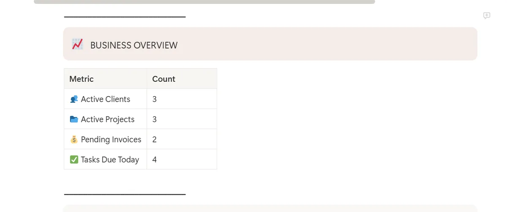
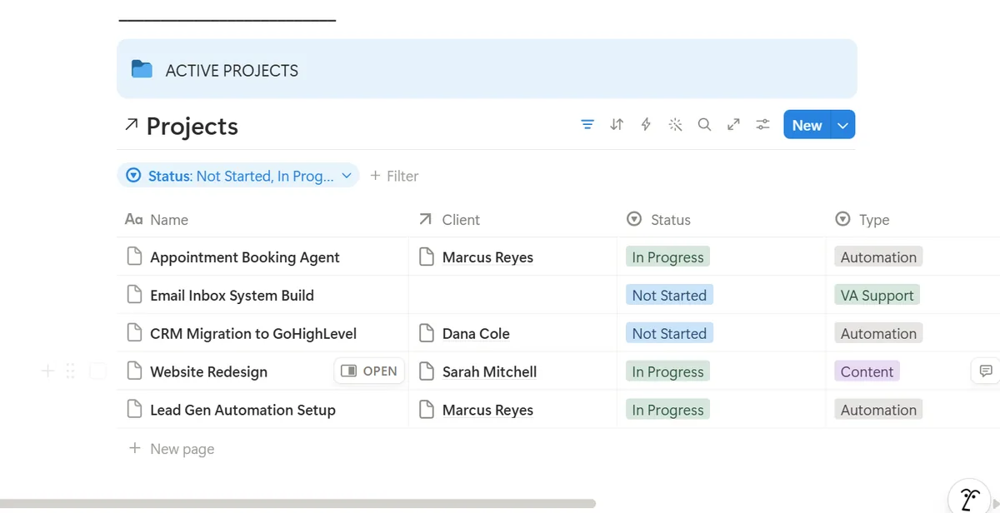

Project
A relational operations dashboard built in Notion to run a freelance/agency client pipeline end to end — covering client lifecycle tracking, project & task management, invoice status, and a live business overview that surfaces what needs attention today without digging through four separate databases.
This project is the operations backbone for managing freelance/VA clients from first contact to paid invoice — built as a single Notion workspace with four relational databases (Clients, Projects, Tasks, Invoices) feeding one central Dash Board. Instead of checking each database separately, the dashboard surfaces exactly what matters each day: what's overdue, what's due today, which projects are active, and which invoices are still unpaid.
The dataset models a realistic client pipeline — clients at every stage (Lead → Active → Past), projects at every status (Not Started, In Progress, Done), and tasks spanning overdue, due-today, and upcoming — so every filtered view on the dashboard has real content to prove the logic actually works, not just an empty template.
The Dash Board home view — Today's Focus, Overdue Tasks, and the Business Overview metrics table pulling real counts across all four databases.
// Dash Board — Business Overview · Active Clients 3 · Active Projects 3 · Pending Invoices 2 · Tasks Due Today 4

Four databases, connected by relation properties, so every task rolls up to a project, every project rolls up to a client, and every invoice ties directly back to the client being billed. One source of truth per entity — no duplicate data entry across databases.
Every project relates to exactly one client. Every task relates to exactly one project. Every invoice relates to exactly one client. No entity duplicates data another database already owns — relations do the linking.
Active Projects, filtered by status, with the Client relation populated — showing the link between the Projects and Clients databases actually resolving.
// Projects database — filtered to Not Started / In Progress · Client column pulled via relation

| # | Step | Skill | Result |
|---|---|---|---|
| 1 | Designed relational schema across Clients, Projects, Tasks, and Invoices | Notion Relations | ✓ Passed |
| 2 | Populated a realistic dataset spanning the full client lifecycle (Lead → Active → Past) | Data Modeling | ✓ Passed |
| 3 | Built filtered linked views — Overdue Tasks, Today's Tasks, Active Projects, Active Clients, Pending Invoices | Filtered Views | ✓ Passed |
| 4 | Built a Business Overview summary reflecting live counts across all four databases | Dashboard Design | ✓ Passed |
| 5 | QA pass caught a data entry mismatch on an invoice amount before publishing — corrected against source records | QA / Review | ✓ Passed |
How the four databases connect, and what each relation is responsible for surfacing on the dashboard.
| Database | Relation Field | Links To | Purpose |
|---|---|---|---|
| Projects | Client | Clients | Ties each project to its owning client |
| Tasks | Project | Projects | Ties each task to its parent project |
| Invoices | Client | Clients | Ties billing directly to the client record |
| Dash Board | Filtered Views | All 4 databases | Surfaces overdue, today's, active, and pending items in one place |
Most solo VAs and small agencies run their client pipeline across scattered spreadsheets, sticky notes, or memory — no single view of what's overdue, who's paid, or which projects are stalled. That gap is exactly where clients get dropped and invoices get missed.
This system gives a one-person operation the same visibility a small team's project manager would have: every overdue task flagged automatically, every client's stage tracked from first contact to final invoice, and one dashboard that answers "what needs my attention today" without opening four separate databases.
The pattern — clients → projects → tasks → invoices, all relation-linked into one dashboard — isn't specific to any one niche. It's the same backbone that scales from a solo VA's first three clients to a small agency's full roster.